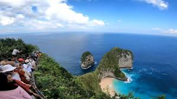

JENIS-WISATA

PANTAI KELINGKING
Sebuah desa yang dikenal sebagai pusat seni dan budaya Bali , Ubud menawarkan suasana pedesaan yang asri dengan sawah terasering, hutan, dan pura. Ubud juga terkenal dengan galeri seni, pertunjukanSelengkapnya...